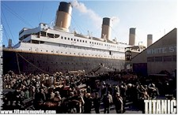
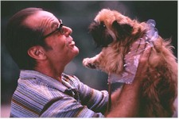
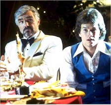
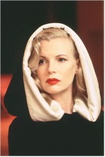

While most Oscar prognosticators saw Titanic getting a Best Picture nod, few industry watchers were prepared for the wave of nominations the blockbuster epic received as actress Geena Davis read the Academy Awards roster from Los Angeles this morning (10 February).

Almost immediately, the true impact of Titanic's effect on the awards was apparent, as Gloria Stuart and Kate Winslet became the first acting pair in the history of the awards to receive nominations for playing the same character in the same year (Marlon Brando and Robert De Niro both won Oscars for playing the same character – Vito Corleone – in The Godfather, but they were a few years apart and Brando didn't show up to accept his anyway. And as long as we're being parenthetical, when was the last time a true box office champion was the overwhelming favorite to win Best Picture? Unscientifically, Forrest Gump might be the most prominent recent example, although both Star Wars and E.T. were nominated but failed to win. End of parentheses).And while Leonardo Di Caprio failed to garner a Best Actor nod for his rather too contemporary reading of the doomed half of the put-upon lovers, the movie also received nominations for Best Director (James Cameron, one of five first-time nominees in that category), Art Direction, Cinematography, Sound, Sound Effects Editing, Original Dramatic Score (James Horner), Original Song ("My Heart Will Go On," written by Horner and Will Jennings and performed by Celine Dion), Costumes, Film Editing, Makeup, and Visual Effects.
That is the most nominations for a single film since All About Eve in 1950, and while Joseph L. Mankiewicz' backstage drama only won six statuettes, look for Titanic to at the very least sweep or rule the technical awards. The 1959 version of Ben Hur still holds the record for most Oscars won, with 11 (West Side Story is second with 10, while Gone with the Wind, From Here to Eternity, Mary Poppins and Who's Afraid of Virginia Woolf? are tied for second in the total nominations category with 13. And finally, Cabaret holds the record for most Oscar wins – eight – without bagging Best Picture).
There were relatively few surprises among the Best Picture nominees, with L.A. Confidential, As Good As It Gets, and Good Will Hunting the odds-on favorites to make the cut. Only The Full Monty raised a few eyebrows, as the small but potent comedy, which recently passed Four Weddings and a Funeral to become the most successful film ever at the British box office, was seen as too lightweight to compete. Films that were seen as more sure bets in that fifth slot but were passed over include Amistad, Boogie Nights, The Ice Storm, Kundun and The Boxer.

One Best Actor nominee set a record of his own, as Jack Nicholson became the first actor with 11 nominations when the Academy recognized him for his work in As Good As It Gets (he passes Laurence Olivier, which is pause for thought). Newcomer Matt Damon (Good Will Hunting) joins 1960s counterculture icon Peter Fonda (Ulee's Gold) as the first-time nominees alongside veterans Robert Duvall (The Apostle) and, in a mild surprise, Dustin Hoffman for his mischievous imitation of producer Robert Evans in Barry Levinson's Wag the Dog. Passed over in the always-crowded field were Djimon Hounsou (Amistad), Daniel Day-Lewis (The Boxer), Samuel L. Jackson (Jackie Brown), Ian Holm (The Sweet Hereafter), Al Pacino (Donnie Brasco) and admitted longshots John Travolta (She's So Lovely), Kevin Kline (In & Out), Ralph Fiennes (Oscar & Lucinda) and Sylvester Stallone (Cop &... ah, Cop Land).In a year universally acknowledged as being very thin on strong leading female characters – much less performances – Brittania ruled the waves as Titanic's Kate Winslet (she of the terrific American accent and other assets) joined Dame Judi Dench (for Mrs. Brown, not her steely M in Tomorrow Never Dies), Helena Bonham-Carter (The Wings of the Dove) and Julie Christie (Afterglow) in dominating the category. Only Helen Hunt carries the American flag for As Good As It Gets. Christie's road to the category is particularly interesting, as few people have seen the film to date and she hasn't won since Darling way back in 1965 (she did Dr. Zhivago the same year). She's only been nominated once since, for Afterglow director Alan Rudolph mentor Robert Altman's McCabe and Mrs. Miller in 1971. Actresses who might've been nominated include Sigourney Weaver for The Ice Storm (or Alien Resurrection, for that matter), Jodie Foster (Contact), Pam Grier (Jackie Brown), Julia Roberts (My Best Friend's Wedding), Jessica Lange (A Thousand Acres) or Robin Wright Penn (She's So Lovely).
And speaking of directors, in addition to Cameron the rookie field includes Curtis Hanson for L.A. Confidential, Gus Van Sant for Good Will Hunting, Peter Cattaneo for The Full Monty and, in a pleasant left-field surprise, Atom Egoyan for the critically lauded but little seen The Sweet Hereafter. This, of course, raises the yearly question of how Nicholson, for instance, or Christie could give Oscar-caliber performances without Oscar-caliber direction (by James L. Brooks and Rudolph, respectively), but never mind: this just points up the popularity contest element that has virtually engulfed the awards. On an interesting tangential note, Spike Lee's most recent film, 4 Little Girls, is one of the five nominees for Best Documentary Feature.

Burt Reynolds is the most satisfying story in the Best Supporting Actor category, as his nomination for Boogie Nights echoes most critics' groups and provides him with his highest profile Oscar attention since Deliverance in 1972. Also nominated were Robin Williams for Good Will Hunting, another comeback kid, Robert Forster, for his sublime deadpan performance in Quentin Tarantino's Jackie Brown, Anthony Hopkins for playing yet another president in Amistad, and, perhaps most surprising, Greg Kinnear for his appealing turn in As Good As It Gets.In addition to the 87-year-old Stuart's Supporting Actress nod for Titanic (she's the oldest nominee by a good bit; be sure and see her genre classic The Old Dark House on tape), other nominees include Joan Cusack for her comic turn in In & Out, Kim Basinger's Veronica Lake twist in L.A. Confidential, Minnie Driver in Good Will Hunting and Julianne Moore's fearless performance in Boogie Nights.
Among the writers, the big news is that Woody Allen, with his 13th Original Screenplay nod )for the self-indulgent but profoundly unique Deconstructing Harry), passes Billy Wilder as the record holder for nominations in this category. Other original scripts to make the cut include Paul Thomas Anderson's Boogie Nights, the Mark Andrus-James Brooks collaboration As Good As It Gets, Matt Damon and Ben Affleck's moving Good Will Hunting, and Simon Beaufoy's The Full Monty.

Adapted Screenplay nominees are former Washington Post film critic Paul Attanasio for Donnie Brasco (he also wrote Quiz Show and the upcoming Sphere), Brian Helgeland and Curtis Hanson for L.A. Confidential (Helgeland also adapted The Postman – maybe two guys have that name?), Atom Egoyan for The Sweet Hereafter, Hilary Henkin and David Mamet for Wag the Dog, and Hossein Amini for The Wings of the Dove. Unheralded here are James Schamus for The Ice Storm and Quentin Tarantino for Jackie Brown, among others.All in all, a good year for Oscar and a conspicuous and decisive turn from independent fare to more mainstream and big-budget event movies. The Oscars will be handed out from Los Angeles' Shrine Auditorium 23 March.